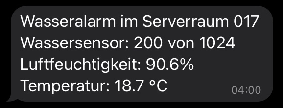
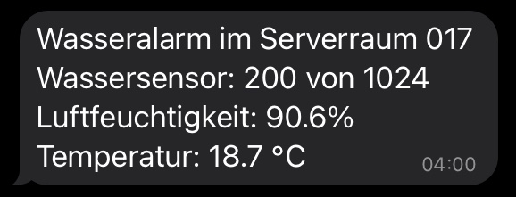
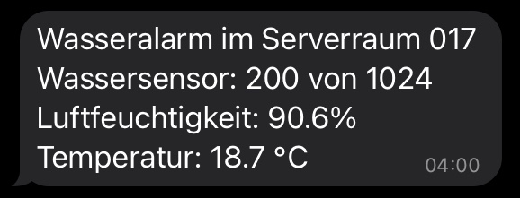

Ein Wassermelder, der Temperatur, Luftfeuchtigkeit und Feuchtigkeit im Boden misst
In einem Serverraum soll die Temperatur und Luft- und Bodenfeuchtigkeit gemessen werden. Wenn ein bestimmter Wert überschritten wird, soll man per Nachricht auf das Smartphone und einem Alarmton am Wassermelder alamiert werden. Die Daten sollen in einer Datenbank gespeichert und grafisch dargestellt werden.
Ich habe den Wassermelder mit einem ESP8266 Mikrocontroller gebaut. Die Temperatur und Luftfeuchtigkeit wird mit einem DHT22-Sensor gemessen. Die Bodenfeuchtigkeit wird mit dem Analog-Eingang vom ESP8266 gemessen. Die Werte werden auf einem kleinem Display am Wassermelder direkt angezeigt und per MQTT an ioBroker, eine Software für Gebäudeautomatisierung, gesendet und in einer InfluxDB gespeichert. Mit Grafana werden die Daten grafisch dargestellt. Wird ein festgelegter Wert überschritten, wird man per Telegram-Nachricht auf ein Smartphone benachrichtigt und am Wassermelder selber ertönt ein Alarmton.
C++
